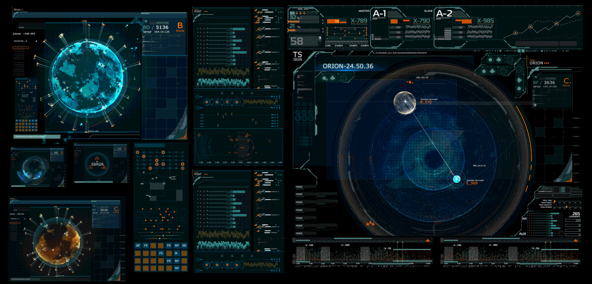

IntroduçãoA disciplina de PPSW (Processos de Produção de SoftWare) é fundamental para a capacitação dos futuros Engenheiros de Software. Desta maneira, a disciplina apresenta as atividades envolvidas na construção de um sistema de software e os principais de modelos de processos de desenvolvimento. Desta forma, podemos definir os principais pontos que envolvem a matéria
O que é Engenharia?Engenharia nada menos se resume ao processo de aplicação do conhecimento científico, econômico, social e prático com um propósito, sendo ele inventar, desenhar, construir, manter e melhorar máquinas, estruturas, sistemas, materiais, processos entre outros. Software, o que é e para que serve?

Software pode ser caracterizado como um conjunto de programas adjacente a sua documentação, no qual, esse conjunto de instruções quando executado é capaz de realizar uma ação desejada. Desta forma, pode-se dizer que um software é composto por partes, sendo definidas da seguinte forma:
Ademais, é importante ressaltar a "durabilidade de um software", no qual com o decorrer do tempo ele não desgasta mas é preciso de manutenção pois pode deteriorar por ficar desatualizado ou não se condizer com o mercado necessário. |